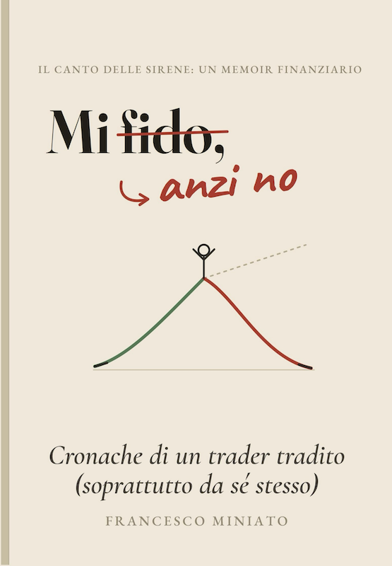

Ciao! Hey there! ¡Hola! Salut! Hallo! Olá! Hej! こんにちは
Sono Francesco Miniato. Insegno informatica in un istituto superiore dell'Emilia-Romagna, dove passo le giornate a ripetere agli studenti la stessa cosa che ripeto a me stesso: non fidarsi mai di ciò che sembra ovvio.
Sulla quarantina, sposato e padre di due figli, sono curioso per mestiere e per vizio. Amo viaggiare e immergermi in mari dai fondali interessanti, convinto che — sott'acqua come nella vita — le cose che contano stiano sempre sotto la superficie.
Poco social per natura, preferisco un buon libro vista mare o una birretta in compagnia.
«Mi fido, anzi no» è il mio primo libro. Lo trovi su Amazon in versione cartacea o eBook. Spero ti faccia venire qualche dubbio in più.
